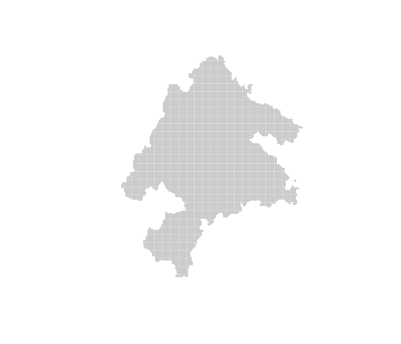

multiscape is an exact optimisation framework for multi-action, multi-objective spatial planning in R. It is designed for problems in which decisions involve allocating alternative management actions across planning units while balancing multiple competing objectives. Building on the transition from place-based prioritisation towards spatially explicit action planning (Tallis et al., 2021; Salgado-Rojas et al., 2023), multiscape represents explicitly what can be done, where it can be done, and what consequences those actions are expected to produce.
Users define feasible management actions, their costs, and their expected effects on ecological or socioeconomic features relative to a reference scenario. These action-based decisions are represented as mixed-integer linear programming (MILP) models together with targets, budgets, spatial requirements, locked decisions, and other constraints. Multiple objectives, including cost, signed effects, profit, and fragmentation, can be registered independently and explored using weighted-sum, epsilon-constraint, and AUGMECON methods. This formulation also provides a basis for multiple-use spatial planning, where alternative actions and uses may need to be evaluated against competing ecological, economic, and social objectives (Neubert et al., 2025).
Installation
Install the stable version from Comprehensive R Archive Network (CRAN):
install.packages("multiscape")Or install the latest development version from GitHub:
if (!requireNamespace("remotes", quietly = TRUE)) {
install.packages("remotes")
}
remotes::install_github("josesalgr/multiscape")Getting started
Multi-action planning in the Meseta Iberica
We illustrate the multiscape workflow using a landscape-planning problem from the Meseta Iberica associated with Cánibe Iglesias et al. (2025). The bundled dataset contains 11,109 planning units, 151 species, four ecosystem-service features, and four alternative management strategies: Afforestation, BAU, FarmReturn, and Firesmart.
The original planning problem evaluates how these alternative management strategies can be distributed across the landscape while satisfying biodiversity and ecosystem-service requirements. Here, we use an earlier version of those inputs to illustrate the multiscape formulation; the final published analysis used 207 species.
The planning question is:
Where should alternative management actions be implemented to meet biodiversity and ecosystem-service requirements at low cost while maintaining spatially cohesive management patterns?
In multiscape, each of the 11,109 spatial units is represented once, and the four management strategies are treated explicitly as alternative actions that can be assigned to those units. For this introductory example, at most one action can be selected in each planning unit.
load_meseta() loads all the prepared inputs into a single named list. It does not create a planning problem or choose any actions. We call that list meseta; its components are accessed with $, for example meseta$planning_units.
library(multiscape)
meseta <- load_meseta()
data.frame(
planning_units = nrow(meseta$planning_units),
features = nrow(meseta$features),
actions = nrow(meseta$actions)
)
#> planning_units features actions
#> 1 11109 155 4
meseta$actions
#> id name
#> 1 1 Afforestation
#> 2 2 BAU
#> 3 3 FarmReturn
#> 4 4 FiresmartThe first output reports the size of the example: 11,109 planning units, 155 features and four actions. meseta$actions shows the strategy identifiers and names. The planning units are an sf object: each row stores a spatial cell and its attributes, including its geometry. We can draw those geometries before building the optimisation problem.
plot(
sf::st_geometry(meseta$planning_units),
border = "grey75",
col = "grey95",
lwd = 0.15,
axes = FALSE
)
The same list contains all the inputs we will use in the following stages:
| Input | What it describes |
|---|---|
planning_units |
Spatial cells as an sf object, with identifiers, attributes and geometries |
features |
A catalogue of the 151 species and four ecosystem-service features |
dist_features |
Reference representation credited to each unit and feature |
actions |
The four original strategy identifiers and names |
action_costs |
Implementation cost for each unit and strategy |
outcomes |
Expected representation for each cell, strategy and feature |
targets |
Required absolute representation of each feature |
boundary |
Weighted edges connecting neighbouring cells |
provenance |
Data sources and preparation notes |
In this example, outcomes are binary: 1 credits one unit of representation and 0 credits none. Missing occurrence rows are treated as zero, and the service features retain the archive’s binary coding. Costs are selection penalties in the supplied units. These definitions are important when interpreting both the targets and the results.
The workflow is load the inputs → create the reference problem → add actions and effects → set constraints and objectives → configure and solve → compare plans. We will build an R object called problem one stage at a time.
Stage 1: Create the base problem
create_problem() establishes the planning units, the feature catalogue and the reference amounts. A feature is something we want to represent, such as a species or an ecosystem service. Its reference amount is the value against which an action’s outcome will be compared.
The reference is the scenario you choose for that comparison. It can be current conditions, a future without the proposed action, continuation of existing management, or another explicitly defined alternative. Reference and action outcomes must describe the same feature and location in comparable units. When comparing future scenarios, use the same planning horizon for both. The reference therefore need not be the condition just before management.
For example, habitat amount might be 100 today, 70 under future business as usual (BAU), and 90 with restoration at that same future date. Relative to future BAU, restoration changes habitat by \(90-70=20\); relative to today, the change is \(90-100=-10\), which instead measures change from the present. Choosing the reference determines which comparison those numbers describe. Tallis et al. (2021) use BAU conditions to assess action impacts, illustrating how the reference can capture improvements over an expected alternative, including avoided losses.
For the Meseta representation example, dist_features supplies an explicit zero credited reference. Representation is credited through the selected strategies. This is an accounting convention for the tutorial; it does not imply that an unmanaged landscape has no biodiversity. The action called BAU is one of the four selectable strategies, and its name does not set the reference automatically.
The constructor receives:
-
pu: the spatial cells and their attributes; -
features: the catalogue of what we are planning for; -
dist_features: reference amounts, supplied through thepu,featureandamountcolumns; and -
cost: the column containing planning-unit costs.
We set planning-unit costs to zero because stage 2 will attach the supplied costs to the individual strategies. This makes the objective charge for the chosen action. Targets are added separately in stage 3; they describe what a plan must achieve, rather than the scenario used for comparison.
pu <- meseta$planning_units
pu$cost <- 0
problem <- create_problem(
pu = pu,
features = meseta$features,
dist_features = meseta$dist_features,
cost = "cost"
)The returned object is called problem; create_problem() is the function that creates it. At this stage, it holds the base inputs. With a zero reference, the constructor may warn that features have no positive reference amounts. The next stage supplies their representation under each action.
Creating the base problem does not yet specify which strategies to choose. Actions describe the available decisions; effects describe what those decisions produce; constraints state what a feasible plan must achieve.
Stage 2: Define actions and their effects
An action is a management choice the solver can select in a planning unit. Here, the four actions are Afforestation, BAU, FarmReturn and Firesmart. add_actions() registers these choices and their costs; it does not select them. The solver will choose where to apply them after we finish defining the problem.
The supplied tables identify strategies with numbers. We use their readable names as action identifiers in the problem and maps. strategy_names translates the original identifiers into those names; the same translation is applied to the cost table below and the outcome table afterwards.
strategy_names <- setNames(meseta$actions$name, meseta$actions$id)
actions <- data.frame(id = meseta$actions$name)
costs <- meseta$action_costs
costs$action <- unname(strategy_names[as.character(costs$action)])
problem <- add_actions(problem, actions = actions, cost = costs)How does an action change the reference?
add_effects() tells the model how each action changes each feature in a cell. You can supply a final amount, an absolute change, or a proportional change. The function converts them into a common representation relative to the reference.
For one cell and feature, let \(r\) be the reference amount, \(y\) the amount under the action scenario, and \(\Delta = y-r\) the signed absolute change. Supply one of these three columns:
| Column | What you supply | Amount after the action | Absolute change |
|---|---|---|---|
outcome |
The final amount \(y\) | \(y = \text{outcome}\) | \(\Delta = \text{outcome} - r\) |
effect |
The absolute change \(\Delta\) | \(y = r + \text{effect}\) | \(\Delta = \text{effect}\) |
relative_change |
The proportional change \(q\) | \(y = r(1+q)\) | \(\Delta = rq\) |
For a reference of 100, these three separate inputs all produce 130:
# Three alternative ways to describe the SAME result; use one of them.
data.frame(pu = 1, action = "restore", feature = "habitat", outcome = 130)
data.frame(pu = 1, action = "restore", feature = "habitat", effect = 30)
data.frame(pu = 1, action = "restore", feature = "habitat", relative_change = 0.30)relative_change = 0.30 means an increase of 30%, not an increase of 30 units. A decrease from 100 to 80 could instead be written as outcome = 80, effect = -20, or relative_change = -0.20. Reference and final amounts share units; a proportional change is dimensionless. Use exactly one of the three columns in the effects table, rather than mixing them.
If the reference is zero, a proportional change still gives zero: \(0(1+q)=0\). Use an absolute outcome or effect to describe a positive amount from a zero reference. That is why this case uses outcome: an outcome of 1 means one unit of credited representation under the selected strategy. With the zero credited reference, outcome and effect have the same numerical value here. We use outcome because the supplied tables describe representation under each strategy.
outcomes <- meseta$outcomes
outcomes$action <- unname(strategy_names[as.character(outcomes$action)])
problem <- add_effects(problem, effects = outcomes)Stage 3: Define the constraints
A constraint specifies a requirement that every feasible plan must meet. We add two kinds:
-
At most one strategy per cell.
count = 1sets the limit andsense = "max"makes it an upper bound. A cell can remain unselected. -
A representation target for every feature. Each supplied
targetis a minimum total amount, summed across the chosen strategies. For example, a target of 100 requires at least 100 units of credited representation.
These are absolute targets in the outcome units. Fractional thresholds are retained: a binary total must reach or exceed the supplied value.
problem <- problem |>
add_constraint_action_cardinality(
count = 1, sense = "max", name = "one_strategy_per_cell"
) |>
add_constraint_targets_absolute(meseta$targets)Stage 4: Define the objectives
Constraints decide whether a plan is feasible. Objectives decide which feasible plans the solver should prefer. Here we want to minimize two quantities:
- Cost: the supplied costs of the selected strategies.
- Spatial fragmentation: weighted edges across which selection of a given strategy changes between selected and unselected.
We register each objective with a readable alias: "cost" and "spatial". These names identify the objectives when configuring the method and reading results. Both refer to the same selected actions. The next section will explain how to combine them for one optimisation run.
problem <- problem |>
add_spatial_relations(meseta$boundary, name = "boundary") |>
add_objective_min_cost(include_pu_cost = FALSE, alias = "cost") |>
add_objective_min_fragmentation_action(
relation_name = "boundary", alias = "spatial"
)For each strategy, an edge contributes when it is selected on one side and not the other. Adjacent cells with the same strategy contribute nothing along their shared edge for that strategy. If two neighbours have different strategies, the edge contributes to both strategies’ boundaries. Minimizing this sum encourages contiguous patches of each action; it does not require all actions to form one connected area.
The supplied boundary table retains the original edge weights and excludes self-pairs. We use it directly so the spatial criterion stays the same across all runs.
Configure the optimisation method
The method tells the solver how to handle the registered objectives. For the first plan, a weighted sum minimizes:
\[\text{cost} + 0.5 \times \text{spatial fragmentation}.\]
One extra unit of fragmentation therefore adds 0.5 units to this combined criterion. We keep the original units by disabling weight normalization and objective scaling. set_runs_manual() supplies a table with one row per run; this first table has one row and therefore requests one plan.
# Keep the formulation before choosing an optimisation method.
action_problem <- problem
problem <- set_method_weighted_sum(
problem,
aliases = c("cost", "spatial"),
runs = set_runs_manual(data.frame(weight_cost = 1, weight_spatial = 0.5)),
normalize_weights = FALSE,
objective_scaling = FALSE
)The coefficient 0.5 is an illustrative preference for spatial cohesion, following the source workflow. Species and ecosystem services enter through the target constraints: every feasible plan must satisfy them. Cost and fragmentation are the quantities being minimized.
We saved action_problem before adding a method so we can reuse the same formulation later with a different table of runs.
Solve the problem
The solver is the optimisation engine that searches for a feasible plan and improves its objective value. This example uses Gurobi, which requires an installation and valid licence. We allow two threads, up to five minutes of solver time, and a 2% relative optimality gap. The large dataset also requires time and memory for model preparation before the solver starts.
problem <- set_solver_gurobi(
problem,
gap_limit = 0.02, time_limit = 300, cores = 2,
solver_params = list(Method = 2, NodefileStart = 0.5),
verbose = TRUE
)
solutions <- solve(problem)The gap measures the remaining difference between the best feasible objective and the solver’s bound. A 2% stopping tolerance does not prove the exact optimum or a unique spatial plan. Check the returned status and gap before interpreting the solution.
Interpret the solutions
Link the run to its stored solution
get_runs() connects the requested run to the retained solution, and reports solver status, runtime and gap. get_objectives() returns the two components in their original units. The weighted scalar value can be reconstructed from these columns.
get_runs(solutions)
performance <- get_objectives(solutions, format = "wide")
performance$scalar_objective <- performance$cost + 0.5 * performance$spatial
performancesolutions stores the retained spatial plan together with its results. Use the values returned by your own run: solver versions and stopping tolerances can produce different feasible plans from the same inputs.
Check target achievement
Objectives answer how costly or fragmented the plan is. Targets answer whether it meets the ecological requirements. Inspect their achieved amounts separately.
target_achievement <- get_targets(solutions)
head(target_achievement)
all(target_achievement$met)The final line checks every row: TRUE means that all reported targets were met. The table also shows required and achieved amounts for each feature. Inspect this separately from cost and fragmentation, and first check the solver status to confirm that a feasible solution was returned.
Decision space: where are the strategies selected?
Map the selected strategies to see what the plan prescribes in each cell. Each strategy has its own map; a blank cell means that strategy was not selected there, although another strategy may have been selected in that cell. Because at most one strategy is allowed per cell, these maps describe alternative spatial assignments rather than overlapping action bundles.
plot_spatial_actions(
solutions, solutions = 1, actions = actions$id, layout = "facet", ncol = 2
)The maps and objective values answer complementary questions: where to act, and how costly or fragmented the resulting plan is. The article’s maps summarize ten replicates with different final inputs and scenarios; the tutorial first inspects one plan and then explores alternatives from the available earlier dataset.
An executed example
The following maps show six solved plans for the bundled inputs, using spatial weights 0, 0.1, 0.25, 0.5, 1 and 2. Each plan meets all 155 targets. The colours identify Afforestation (yellow), BAU (green), FarmReturn (blue), and Firesmart (brown); grey cells have no selected action.

Read the panels from weight 0 to weight 2 to see how the spatial preference changes the allocation. The next section shows how to request these six runs and compare their performance. These panels are solved plans for the bundled data; the article’s maps summarize a different, ten-replicate analysis.
Objective space: explore the spatial-cost trade-off
Once the original single run is understood, a separate planning question is how much extra cost greater cohesion requires. Keep the data and targets fixed and vary the spatial coefficient. Start from action_problem, saved before the method was configured. Each problem accepts one method definition, so we configure this exploration from that shared formulation. The six rows below request six weighted runs with identical data, actions, constraints and objectives.
spatial_exploration <- set_method_weighted_sum(
action_problem,
aliases = c("cost", "spatial"),
runs = set_runs_manual(data.frame(
weight_cost = rep(1, 6),
weight_spatial = c(0, 0.1, 0.25, 0.5, 1, 2)
)),
normalize_weights = FALSE,
objective_scaling = FALSE
)
spatial_exploration <- set_solver_gurobi(
spatial_exploration, gap_limit = 0.02, time_limit = 300, cores = 2,
solver_params = list(Method = 2, NodefileStart = 0.5), verbose = TRUE
)
alternatives <- solve(spatial_exploration)
get_runs(alternatives)
plot_tradeoff(
alternatives, objectives = c("cost", "spatial"),
connect = FALSE, label_runs = TRUE
)Both components are minimized, so lower values on either axis are preferable. Weight 0 focuses entirely on cost. Larger spatial weights give the solver a stronger incentive to accept extra cost when it reduces fragmentation. Six weighted runs sample this trade-off; they do not establish the complete frontier. This extension is a sensitivity analysis, not a replication of the article’s climate scenarios or its ten stochastic replicates.
An observed trade-off

Both objectives are minimized. In the six audited plans above, moving from weight 0 to weight 2 increases cost by approximately 16% and reduces action fragmentation by approximately 95%. These runs sample the trade-off rather than proving its complete Pareto frontier. Solution 5 improves both objective values of solution 4, which remains in the sample because of finite stopping gaps; frontier diagnostics use the observed non-dominated set.
Compare spatial similarity and recurrent assignments
For a set of alternatives, objective values show performance, while decision analysis shows whether that performance requires different actions in space. Jaccard similarity measures overlap in selected cell-action pairs. A value of 1 means identical selected assignments; 0 means no shared assignments. Two plans can have similar costs while prescribing different actions in many cells.
selection_similarity(alternatives, metric = "jaccard", format = "matrix")
action_frequency <- selection_frequency(alternatives)
head(action_frequency[order(-action_frequency$frequency), ], 10)Frequency measures how often a particular cell-action assignment recurs across the retained alternatives. Read it as recurrence within this exploration; it is not a selection probability for the article’s stochastic replicates. The objective, decision and linkage tools illustrated in the simulated workflow provide a fuller introduction to analysing many alternatives.
Identify an empirical compromise
A solution is dominated if another observed plan is at least as good on both objectives and strictly better on one. The observed non-dominated plans are the alternatives that survive that comparison.
frontier_knee() suggests a compromise among these observed non-dominated solutions. Its recommendation depends on the sampled weights and normalized objective geometry; it is a decision aid, not a uniquely best plan. frontier_extremes() and frontier_distances() describe the observed extremes and each plan’s position relative to the observed ideal and nadir.
knee <- frontier_knee(alternatives, objectives = c("cost", "spatial"))
knee
frontier_extremes(alternatives, objectives = c("cost", "spatial"))
frontier_distances(alternatives, objectives = c("cost", "spatial"))Link performance to spatial changes
Compare neighbours in objective space and ask whether moving between those plans changes many management prescriptions. Objective distance uses normalized performance; decision distance uses the selected unit-action pairs. Neither measure alone describes both kinds of change.
neighbors <- frontier_neighbors(alternatives, objectives = c("cost", "spatial"))
linkage <- linkage_distances(
alternatives, objectives = c("cost", "spatial"),
pairs = neighbors, decision_metric = "jaccard"
)
linkage
turnover <- linkage_turnover(
alternatives, objectives = c("cost", "spatial"),
pairs = neighbors, decision_metric = "jaccard"
)
turnoverTo inspect a particular transition, use its solution identifiers. The returned object includes a summary, individual cell transitions, action changes and a state-transition matrix. selection_consistency() helps identify which assignments remain stable across the retained alternatives. As with frequency, interpret it for this sample of plans.
linkage_contrasts(turnover, type = "high_reconfiguration", n = 2)
linkage_transition(
alternatives, from = 1, to = 2, objectives = c("cost", "spatial")
)
head(selection_consistency(alternatives))The executable tutorial is examples/meseta_iberica.R. It includes the single-run formulation, the six-weight exploration and the objective, decision and linkage analyses above. The simulated workflow illustrates additional methods and diagnostics on a smaller dataset.
Learn more
The three complete example loaders provide different starting points:
| Loader | Example |
|---|---|
load_sim_multiaction() |
64 spatial cells, two features and two actions for quick function examples |
load_meseta() |
The complete inputs used in this README |
load_ecosystem_services() |
Planning units and four raster layers for the integrated-planning vignette |
Browse the function reference or the documentation for the main workflow functions: load_meseta(), create_problem(), add_actions(), add_effects(), add_constraint_targets_absolute(), the set_method_*() family, and solve(). Post-optimisation tools are organized into the frontier_*(), selection_*(), and linkage_*() families.
If you find a bug or would like to suggest an improvement, please open an issue.
References
Cánibe Iglesias, M., Hermoso, V., Azevedo, J. C., Campos, J. C., Salgado-Rojas, J., Sil, Â., & Regos, A. (2025). Integrating multiple landscape management strategies to optimise conservation under climate and planning scenarios: a case study in the Iberian Peninsula. Ecosystem Services, 74, 101742. doi:10.1016/j.ecoser.2025.101742.
Tallis, H., Fargione, J., Game, E., et al. (2021). Prioritizing actions: spatial action maps for conservation. Annals of the New York Academy of Sciences, 1505(1), 118–141. doi:10.1111/nyas.14651.
Salgado-Rojas, J., Hermoso, V., & Álvarez-Miranda, E. (2023). prioriactions: Multi-action management planning in R. Methods in Ecology and Evolution. doi:10.1111/2041-210X.14220.
Neubert, S., McGowan, J., Metcalfe, K., et al. (2025). Multiple-use spatial planning for sustainable development and conservation. Trends in Ecology & Evolution, 40(11), 1126–1142. doi:10.1016/j.tree.2025.09.007.